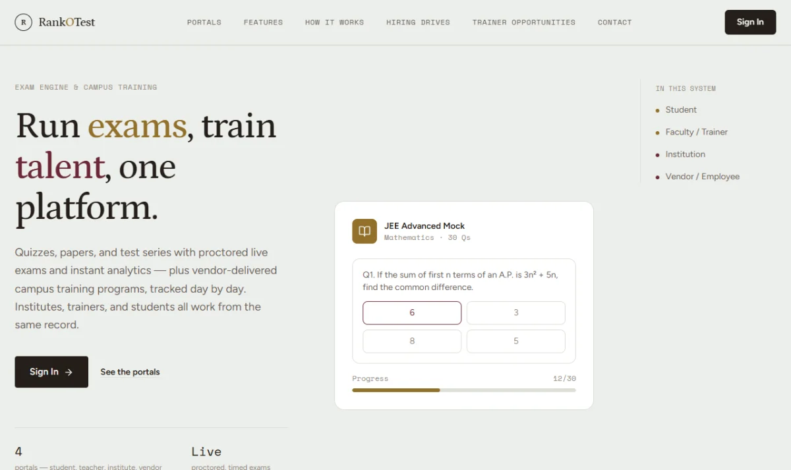
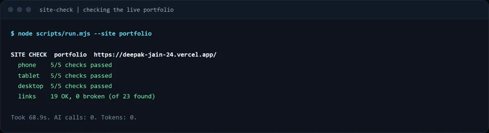
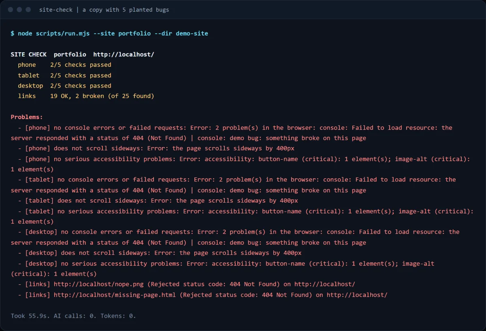
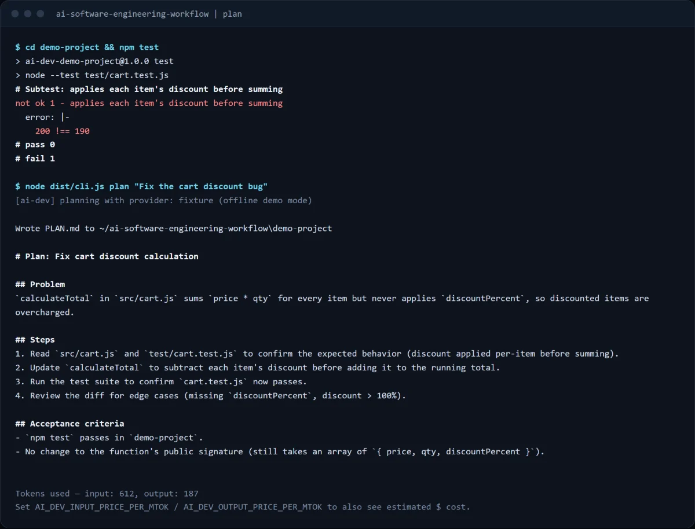
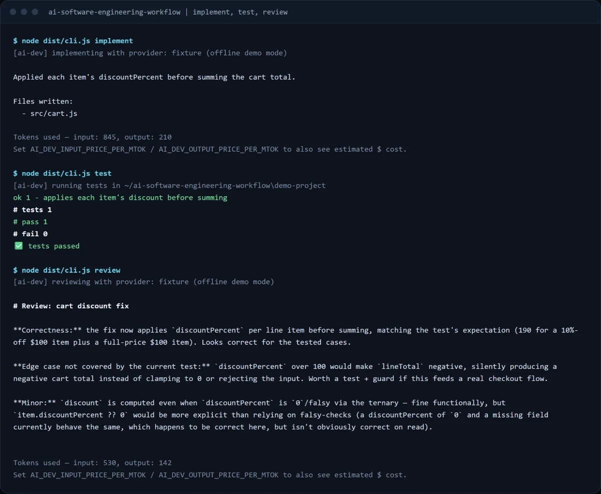
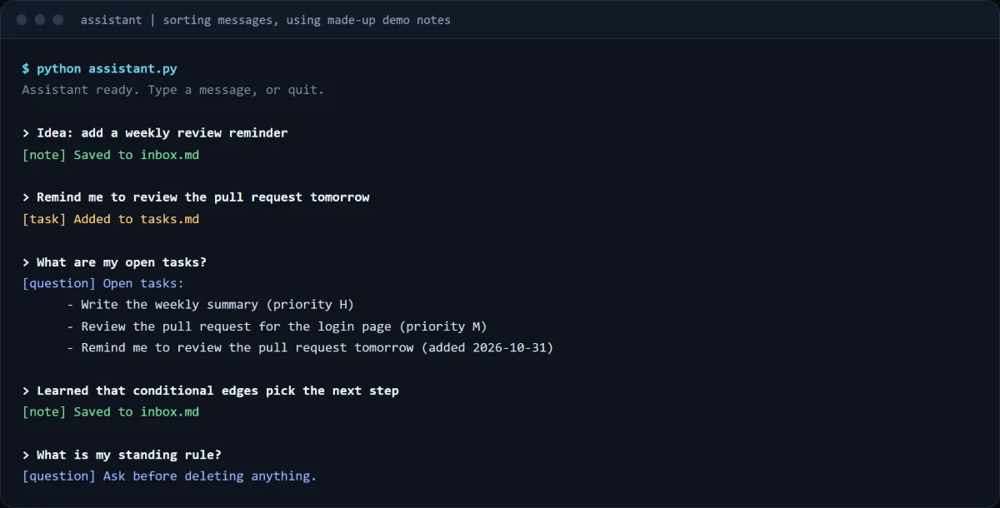
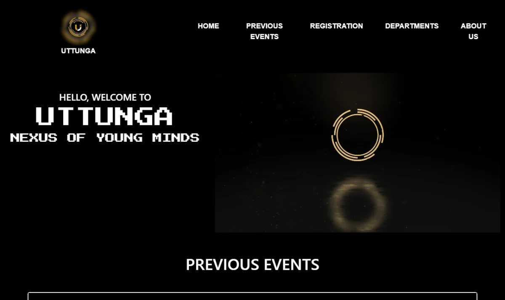
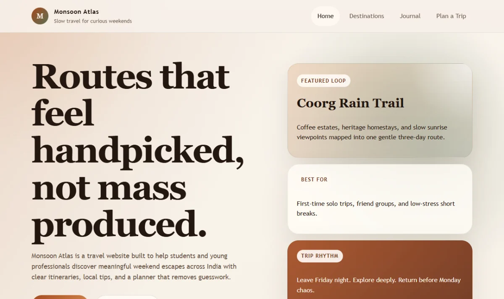

A team of AI helpers
Separate AI helpers for building, planning and testing, each with its own job and rules. I stay in charge of every important decision.
Open to AI application, full-stack and forward-deployed roles · Bengaluru or remote
AI application engineer and full-stack developer
I build assessment and hiring software, and AI-assisted workflows with tests behind them. At TalentXminds I am a core developer on RankOTest, a platform that runs public hiring drives in colleges.
Selected work
Two live products, three AI and testing projects, and where I started. Open a row for the detail.
5 portals and 6 user roles, built with TypeScript, React, Node.js, MongoDB and Redis. I own major parts of exams, coding assessments, grading and access control, and I ship releases to live servers on Docker and AWS EC2.
It runs the Litmus public hiring drive in colleges, and a job portal with 100+ jobs posted and 400+ trainers registered.

A news website I develop end to end. In 2026 it got new features, faster pages, a redesigned interface and a rebuilt backend, and I ship its releases to a live server on Docker and AWS EC2.
Playwright, axe and lychee behind one command. Real Chrome at phone, tablet and laptop sizes. Repeat runs use no AI and no tokens. On a copy with five planted bugs it caught all five.
Demonstration only: the code is not published.


Takes a coding task through five steps with structured model output and human-reviewable plans. A provider abstraction and an offline fixture mode mean the whole flow and its CI run with no API key. Tracks tokens and cost.


Sorts each message into a note, a task or a question, files it in the right place, and answers from stored notes. If no model is available it falls back to keyword rules.
Prototype: the code is not published.

React, Node and Express, MongoDB, JWT login, cart and orders.
A Bootstrap front end with a Google Form for registrations.

A 4-page responsive site with a live weather board and a trip budget planner.

AI automation
Software that does work for me, with checks so I can trust it. If a script can do the job, I use a script. I use AI only where judgement is needed.
Separate AI helpers for building, planning and testing, each with its own job and rules. I stay in charge of every important decision.
Give it a task and it plans, writes, tests, reviews and fixes the code. A person can read the plan before any code is written.
See it on GitHubSend it a message and it works out whether it is a note, a task or a question, files it, and answers from what I have saved. It still works when no AI is available.
One command checks a site on phone, tablet and laptop for broken links, errors and accessibility. I used no AI on purpose: a plain script is faster and free. It caught all 5 bugs I planted to test it.
AI can make mistakes, so I test what it produces. I found a case where it could write files outside the project, fixed it, and added tests.
Log
I learn by building. I started with hand-coded sites, took on a live news website as a freelancer, then joined a real product team. Full role details are on LinkedIn.
Stack
TypeScript, JavaScript, Python, Java, SQL
React, React Native, Tailwind CSS, HTML and CSS
Node.js, Express, MongoDB, Redis, REST APIs, RBAC
Claude Code, MCP tooling, LangGraph, structured LLM workflows
Playwright, Postman, Docker, AWS EC2, GitHub Actions, CI/CD
Proof, not promises
A small in-browser subset of my site-check tool. These run on your device, right now, and they can fail.
Contact
Open to AI application, full-stack and forward-deployed engineering roles in Bengaluru or remote.
jain.deepak150202@gmail.com
Email me